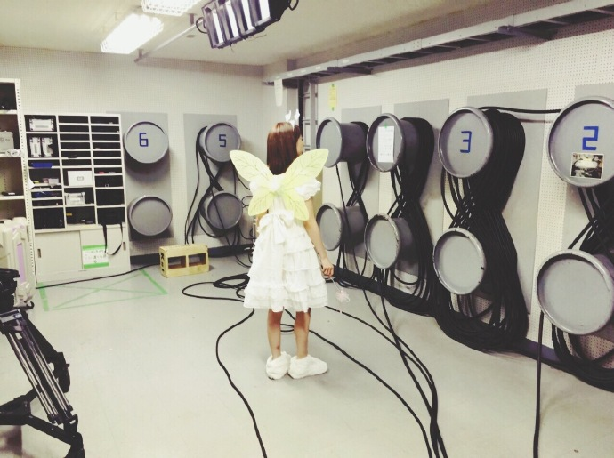
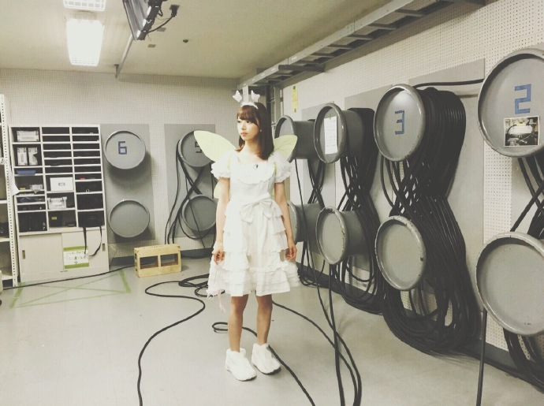

| 2016/06 28 Tue | 始まって３年目にしてノギビンゴにいじられ始めたの気付いてた？ |
ピロピロン♪（妖精降臨の音）

こんにちは！わたしは妖精！☆

困ってる人はいないかな～～？？？☆～（ゝ。∂）

いねぇ

お腹空いてるようで空いてない、そんな毎日です最近は！！！
ねえ！ＥＸ大衆！SamuraiELO！
両方表紙なんだけど見てくれたかな？？
ＥＸ大衆のインタビューではずっと引っかかってたけど言うタイミングも弁解もできなかったこととか色々話せて文字になってすっきりしてるから読んでほしいなー！
ELOは最近の好みのことを話してる！両方チェックしてね！ピロピロン♪（妖精降臨の音）
グアムで写真集とってたの！へへ！

海きれいだった～南の海はこんなきれいなのか～！
コメント(1215)
2016/06/28 22:48